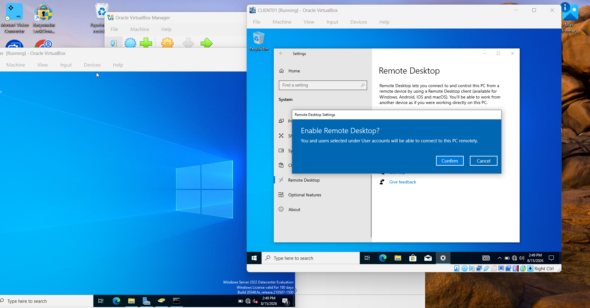
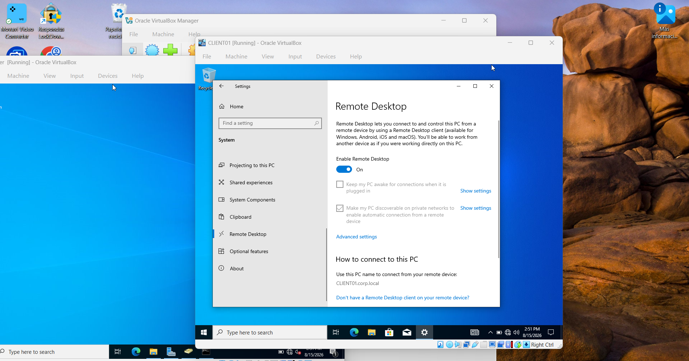
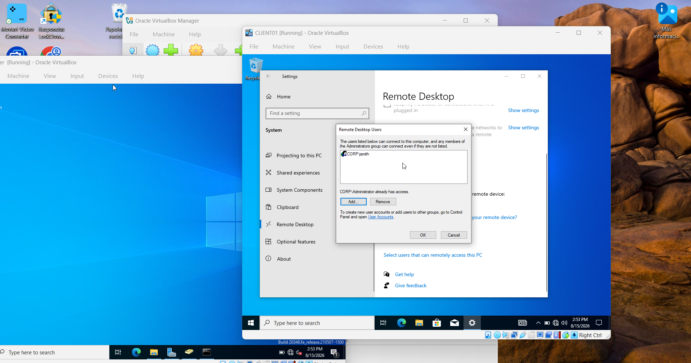
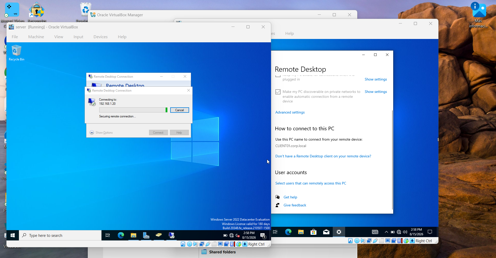
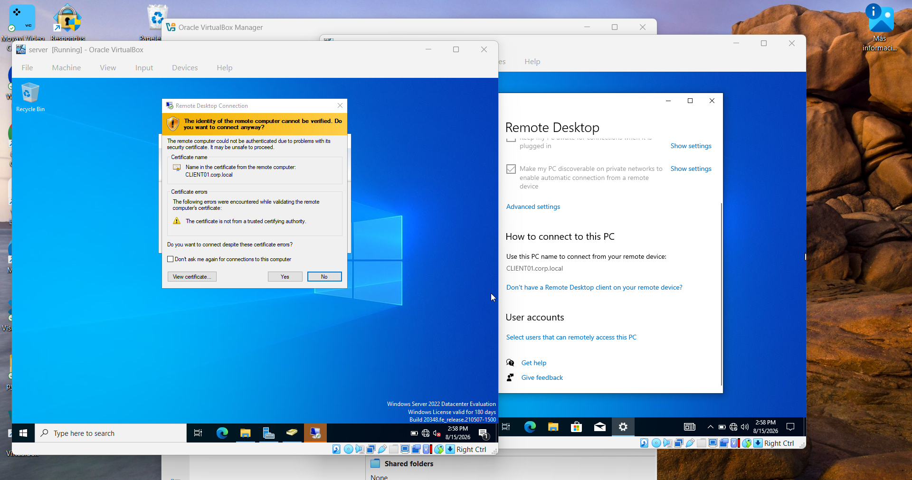
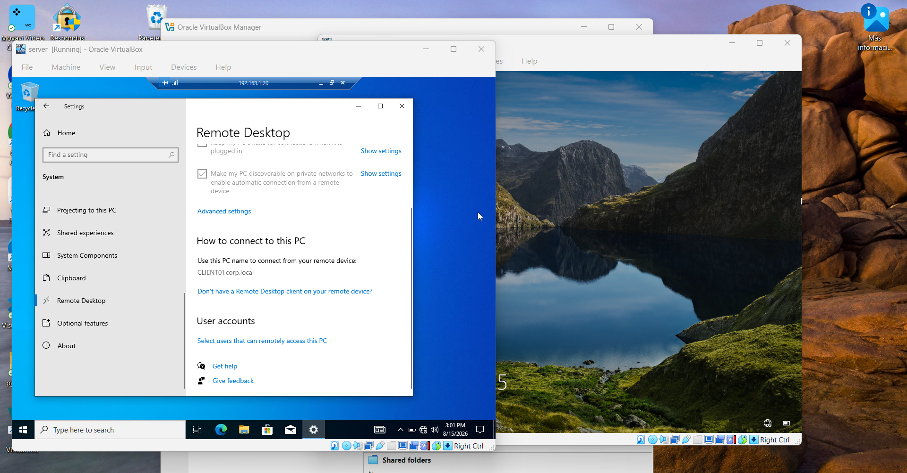
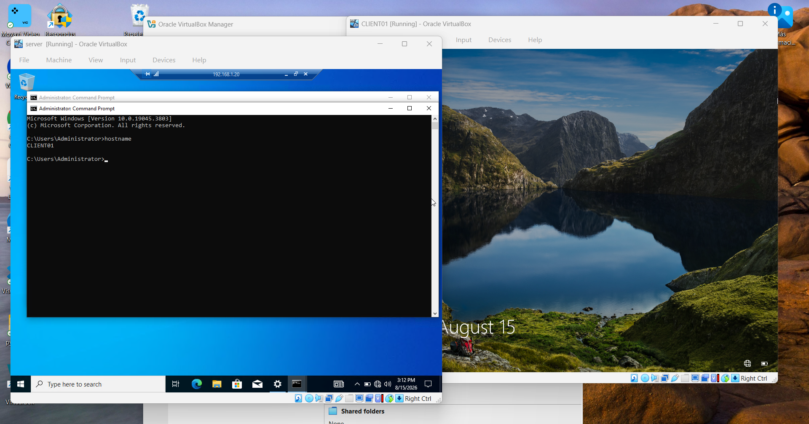

Setting Up Remote Desktop Between My DC and Client (Like an IT Tech Would)
This was on my list right after fixing that DNS issue — Remote Desktop is one of the most common things a help desk tech actually does day to day. So I set it up properly on my lab: enabled it on the client, authorized a specific domain user, and connected from my "admin machine" like I'd be doing for a real ticket.
The scenario I had in mind: a help desk tech needs to remote into a user's machine to fix something without physically walking over. That means the client has to allow incoming RDP connections, and only the right people should be able to connect. Here's how I set it up and tested it end to end.
// Step 1: Enable Remote Desktop on the client
Started on CLIENT01 (my Windows 10 domain-joined machine). Went to Settings → System → Remote Desktop and flipped the toggle on. Windows throws up a confirmation before it actually opens the door.


// Step 2: Authorize a specific user, not just Administrator
By default, the local Administrators group already has access. But in a real environment you don't want to hand out full admin rights just so someone can be remoted into. So I went into "Select users that can remotely access this PC" and added my domain user, CORP\smith, specifically.

// Step 3: Connect from the "admin" machine
Switched over to my server (DC01) and opened Remote Desktop Connection, pointing it at CLIENT01's IP: 192.168.1.20.

// Step 4: The certificate warning (and why it's expected here)
Right after entering credentials, Windows threw a certificate warning. In a production environment this is worth taking seriously — but in a lab like mine, it's expected: CLIENT01 doesn't have a certificate issued by a trusted CA, so RDP falls back to a self-signed one that Windows can't verify.

I confirmed the certificate name matched CLIENT01.corp.local (the machine I was actually trying to reach) before clicking Yes — that check is exactly the kind of habit that matters more once you're doing this against real machines.
// Step 5: Confirming I actually landed on the right machine
Once connected, I had a full remote session into CLIENT01's desktop. To prove the connection was real and not just a local window, I opened Command Prompt inside the session and ran hostname.


CLIENT01
C:\Users\Administrator>
// What I took away from this
- Enabling RDP is the easy part — deciding who gets access is the part that actually matters. Adding a specific user instead of relying on default admin access is a small habit with a real security reason behind it.
- Certificate warnings aren't something to click through blindly. Checking that the certificate name matches the machine you're trying to reach is a two-second habit that catches a real problem if you're ever on the wrong end of a connection.
- Always verify you're actually where you think you are. Running hostname after connecting is a simple gut-check, especially useful when juggling multiple RDP sessions to different machines during a shift.
- This is one of the most common day-to-day tasks in help desk work, so getting comfortable with the full flow — not just clicking "Connect" — was worth the time.